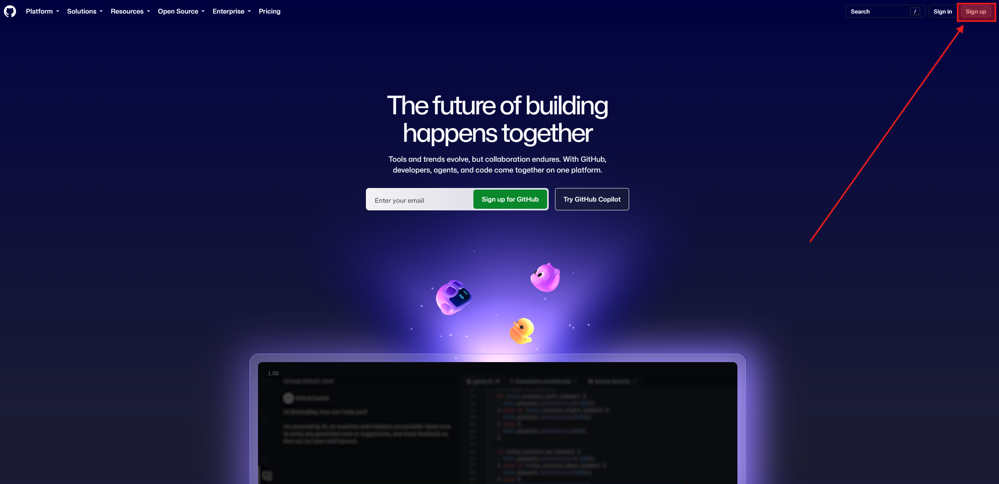
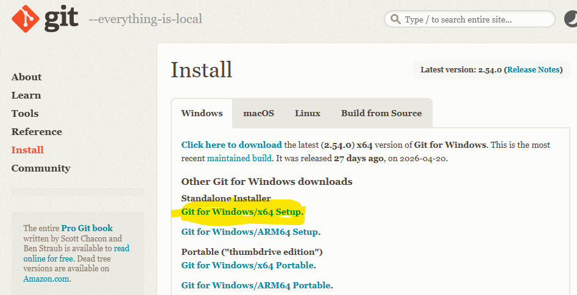

0부터 Claude Code 셋업
GitHub 가입 → git 설치 → Claude Code 설치(한 줄) → Orca 설치·홈베이스·테마 → git 신원 등록 → gh 설치 → Claude 계정 등록 → 첫 실행. Node.js까지 깔면 배포 준비 끝.
Mac이세요? 우상단 🪟 Win ⇄ 🍎 Mac 토글 클릭 — 명령어·경로·단축키가 즉시 Mac으로 바뀝니다.
셋업 흐름, 한눈에
GitHub 가입
github.com — 평소 쓰는 개인 이메일로
git 설치
git-scm.com 내려받아 전부 기본값 설치
Claude Code 설치
irm https://claude.ai/install.ps1 | iexcurl -fsSL https://claude.ai/install.sh | bash
Orca 설치 · 홈베이스 · 테마
onorca.dev 다운로드 → my-intro 추가 → 테마 설정
확인 + git 신원
claude --version · git config 두 줄
gh 설치
cli.github.com 설치 파일 — 로그인은 2장에서
Claude 계정
첫 로그인이 곧 등록 — Orca가 자동 인식
claude → "안녕"
Orca 터미널에서 첫 실행 · 로그인
터미널에 뭔가 치는 건 STEP 03 설치 한 줄과 Orca 터미널 몇 줄뿐 — 나머지는 내려받아 설치하거나 브라우저에서 가입. Node.js는 마지막에 함께 설치합니다.
먼저 — github.com 가입부터 (3분)
브라우저로 github.com 접속 → 우측 상단 "Sign up" 클릭
평소 쓰는 개인 이메일 · 비밀번호 · 사용자명 입력 → 인증코드 메일로 받아 입력
"무료 플랜" 선택 → 본인 정보 설문은 "Skip" OK
로그인 후 우측 상단 본인 아이콘 보이면 → 가입 완료

여기서 쓴 이메일이 기준 — STEP 05의 git 신원 등록부터 2장의 Vercel 로그인까지 전부 이 메일 하나로 갑니다. 사용자명은 바꾸기 번거로우니 실명 또는 평소 닉으로.
이어서 — git 설치
git-scm.com에서 받기
git-scm.com/download/win ↗- 노란색 "Git for Windows/x64 Setup" 클릭 → 설치 파일 다운로드
- 받은 파일 실행 → 옵션 화면이 여러 번 떠도 전부 기본값 그대로 Next → Install
- 설치 확인·신원 등록은 STEP 05에서 한 번에
Mac — 대부분 이미 설치돼 있음
- 따로 설치할 것 없음 — STEP 05에서
git --version으로 확인만 - 버전 숫자가 찍히면 그대로 끝 (대부분 여기서 통과)
- 없다는 메시지가 뜨면 — 자동으로 뜨는 "개발자 도구 설치" 창에서 설치 동의 (5~10분). 안 되면 질문 버튼

터미널은 아직 안 엽니다 — 내려받아 설치만. Next를 눌러도 컴퓨터는 망가지지 않으니 겁먹지 말고 진행. git이 뭔지는 2장 Git 기초에서 제대로 배웁니다.
설치 방법 3가지 — 본인 환경에 맞게
irm https://claude.ai/install.ps1 | iex
npm update로 업데이트도 한 줄.curl -fsSL https://claude.ai/install.sh | bash
brew upgrade 한 줄로.npm update로 업데이트도 한 줄.설치가 끝나면 그 창은 닫아도 됩니다 — 확인(claude --version)은 STEP 05에서 Orca 터미널로. 왜 새 터미널이어야 하는지는 다음 슬라이드에서.
환경변수 — 시스템이 공유하는 설정값
PATH가 뭔가
"명령어를 어디서 찾을지" 폴더 목록을 적어둔 환경변수.
- PowerShell셸(zsh)이
claude를 PATH 폴더들에서 검색 - 설치 스크립트가 PATH에 자동 추가
- 새로 등록된 PATH는 새 터미널에서만 적용 — 방금 설치한 claude를 새 터미널에서 확인하는 이유
"인식되지 않습니다command not found"는 99% PATH 문제. 새 터미널이 1차 해결책 — 곧 설치할 Orca의 터미널이 바로 그 새 터미널입니다.
Orca · onorca.dev에서 설치
- 브라우저로 onorca.dev ↗ 접속
- Windows용 Download 버튼 클릭 → 설치 파일 다운로드Download for Mac 클릭 (Apple Silicon / Intel 맞는 것)
- 받은 설치 파일 실행 → 안내 따라 설치 (1~2분)받은 파일 열기 → 응용 프로그램 폴더로 드래그
- 완료 후 시작 메뉴에서 "Orca" 실행첫 실행 시 Gatekeeper 경고 → "열기" (1회 승인)

무료·오픈소스라 결제·회원가입 없이 바로 씁니다. 설치가 끝나면 다음 슬라이드에서 Orca가 어떤 도구인지 30초 소개.
Orca — AI 에이전트 전용 작업실
에이전트를 위한 설계
일반 편집기가 아니라 — Claude Code 같은 AI 에이전트를 돌리기 위해 만들어진 작업 공간(ADE)입니다.
한 화면에 전부
파일 편집 + 터미널 + 브라우저 미리보기가 한 창에 — 만든 페이지를 그 자리에서 바로 봅니다.
무료 · 오픈소스
완전 무료(MIT). 나중엔 에이전트 여러 개를 나란히 돌리는 것도 — 8장쯤에 탐나게 됩니다.
실행이 안 되면 — 완전히 종료 후 다시 실행, 그래도 안 되면 onorca.dev에서 재설치 → 오른쪽 질문 버튼에 올려주세요.
Orca에 my-intro 폴더 추가
3가지로 끝
- Orca 실행 → 왼쪽 Projects의 + 로 폴더 추가 → 새 폴더
c:\lecture\my-intro~/lecture/my-intro만들어 선택 (lecture 폴더가 없으면 같이 생성) - 오른쪽에 터미널이 바로 보입니다. 이 화면이 과정 내내 홈베이스
- 화면이 눈에 안 맞으면 — Settings(⚙)에서 테마(Dark/Light)를 바꿔 두세요
이후 슬라이드의 모든 명령은 이 내장 터미널에 입력합니다 — 독립 PowerShell터미널을 따로 열 필요 없어요. 편집기 + 터미널 + AI + 미리보기가 한 화면.
Orca 터미널에서 — 확인 + 신원 등록

"인식되지 않습니다command not found"가 뜨면 — Ctrl+T⌘T로 새 터미널(PATH 갱신) → 안 되면 Orca 재시작. git이 없으면 자동으로 뜨는 "개발자 도구 설치" 창에서 동의 + 설치. git config 두 줄은 평생 한 번만 — 이메일은 GitHub 가입 메일과 동일하게(뒤의 Vercel 연동까지 하나로).
GitHub CLI(gh) — 내려받아 설치
cli.github.com에서 받기
cli.github.com ↗- "Download for Windows" 클릭 →
.msi설치 파일 다운로드 - 받은 파일 실행 → 전부 기본값으로 Install
Ctrl+T로 새 Orca 터미널 →gh --version확인
Homebrew 또는 다운로드
- Homebrew 사용자:
brew install gh한 줄 - 아니면 cli.github.com ↗에서 다운로드 → 설치
⌘T로 새 Orca 터미널 →gh --version확인
gh = GitHub 명령 도구 — claude가 저장소 만들기·올리기 같은 GitHub 작업에 씁니다. 로그인은 지금 안 합니다 — 2장에서 GitHub 계정을 만들 때 함께.
계정 — 첫 로그인이 곧 등록입니다
따로 초대·가입 절차 없음 — Orca에서 바로 등록
별도 팀 초대나 사전 등록이 없습니다. 다음 스텝에서 claude를 처음 실행하면 브라우저 로그인이 뜨는데 — 그게 곧 계정 등록입니다. 한 번 로그인하면 내 컴퓨터에 저장되고 Orca가 자동으로 인식해, 이후 다시 로그인할 일이 없습니다.
로그인은 본인 Claude 계정으로 합니다. 구독·요금(Pro vs API 종량제) 비교는 과정 후반에 자세히 다룹니다.
claude로 "안녕하세요"
홈베이스에서 그대로
- Orca에 my-intro 폴더가 열려 있는지 확인 (STEP 04에서 열어둔 그대로)
- 오른쪽 터미널에
claude입력 - 처음이면 브라우저 로그인 창 → 본인 Claude 계정으로 로그인 (다음 슬라이드)
- 터미널로 돌아오면 "안녕하세요" → 첫 응답 확인
Orca 없이도 됩니다 (참고) — my-intro 폴더 안 우클릭 → "터미널에서 열기"my-intro 폴더 우클릭 → "폴더에 있는 새로운 터미널" 후 claude. 어느 쪽이든 같은 claude입니다.
처음 claude 실행 → 브라우저 로그인 한 번


브라우저가 안 열리면 터미널에 표시되는 URL을 직접 복사해 붙여넣으세요. 로그인은 최초 1회만 — 이후엔 claude 입력만으로 바로 시작됩니다.
Node.js — 지금 설치해 둡니다
- nodejs.org 접속 → "LTS" 큰 버튼 클릭 (Windows .msi 자동 다운로드)
node-v22.x.x-x64.msi(LTS 버전 숫자는 다를 수 있음) 더블클릭 → 보안 경고 "예" → 설치 마법사 Next 따라 진행- Custom Setup에서 "Add to PATH" 체크 확인 → Install → UAC 승인 → 1~2분 대기
- 완료 후 새 내장 터미널에서
node --version→v22.x.x처럼 버전 숫자가 나오면 OK
- Homebrew가 설치돼 있으면
brew install node한 줄 — 30초~1분 - Brew가 없으면 nodejs.org → "LTS" 버튼 →
.pkg다운로드 → 더블클릭 → 설치 마법사 - 설치 후 새 내장 터미널에서
node --version→v22.x.x처럼 버전 숫자가 나오면 OK - Homebrew 자체 설치는
/bin/bash -c "$(curl -fsSL https://raw.githubusercontent.com/Homebrew/install/HEAD/install.sh)"
왜 필요? 홈페이지를 만들고 배포할 때 쓰는 웹 도구들(로컬 미리보기 서버·배포 도구)이 Node.js 위에서 돌아갑니다 — 2장 배포까지 가려면 필수.
막혔을 때 먼저 시도할 것들
Set-ExecutionPolicy -Scope CurrentUser RemoteSigned → 재시도.chmod +x ~/.claude/bin/claude. Mac은 별도 정책 없음 — 권한만 맞으면 OK./login → 브라우저에서 본인 Claude 계정으로 다시 로그인. 계속 안 되면 오른쪽 질문 버튼에.먼저 끝난 분들 —
AI로 코딩할 준비 완료!
8단계를 다 통과했다면 이제는 AI로 코딩을 할 준비가 되었습니다. 아직 막힌 단계가 있어도 괜찮습니다 — 전원 준비되면 본격적으로 AI를 다룹니다.